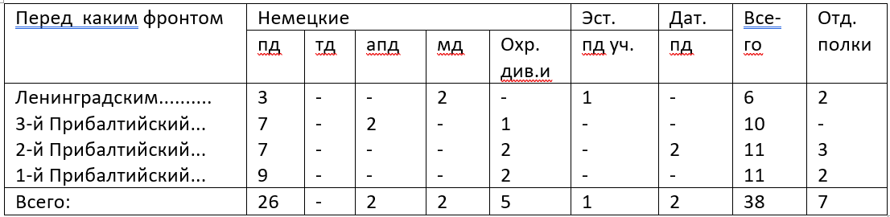

Псковско-Островская наступательня операция
Пояснительная записка
Введение
1944г - это время решающих побед Красной Армии в Великой Отечественное Войне, несмотря на то что враг был ещё очень силён, наши бойцы сумели освободить всю территорию СССР
и выйти в страны Европы начав и освобождения от неминуемой оккупации одним из этих “кирпичей” на пути Великой победы было освобождение города Пскова в июле 1944г. Гитлеровское командование называло Псков “ключом к парадным
дверям Ленинграда”. Попытки освободить Псков в феврале-апреле 1944г успеха не имели, в среднем удалось продвинуться на 18-20 км, это было связано со сложной местностью: много рек и болот, упорно сопротивление оказывали бойцы
Вермахта. С октября 1942г по 1944г продолжилось строительство оборонительной линии “Пантера”, значительная часть этого укрепления и проходили по Псковской равнине. Это было очень серьёзный оборонительный рубеж.
Оперативная обстановка. Силы сторон перед операцией.
Район боевых действий -это Псковская область у Восточной границы Эстонии и Литовская ССР и выступ территории Ленинградской области.
Это холмистая местность, местами сильно заболочено, много рек и озёр, лес расположен неоднородно местами, много шоссейных и грунтовых дорог,
не смотря на то, что рубеж Пантера не был окончательно достроен гитлеровцами. К началу 1944г он представлял собой достаточно развитую систему обороны около 170 км
в длину и от 4до 6 км в ширину. Это система опорных пунктов, соединённых между собой траншеями и ходили сообщения. Города Псков и Остров прикрывались специальными
позиции имелось много дотов и дзотов масса противотанковых препятствий. В целом хорошо продумана маскировка. Прорыв такого мощного рубежа требовал особой подготовки.
Силы сторон
Оценка противника
Общая группировка противника в Прибалтике на 15.7.44 г.
В Прибалтике действовала СГА (штаб Рига) в составе АГ “Нарва”, 18 и 16 армии.
Северной группой армии командовал генерал-полковник Линдеман, который впоследствии был заменён генерал-полковником Шернером.
Армейской группой “Нарва” (штаб Реквере) командовал генерал Физнер, впоследствии сменённый генералом пехоты Грассер.
18А (штаб Валга) командовал генерал пехоты Лох.
16А (штаб Паневежис) командовал генерал артиллерии Ганезен.
Всего в Прибалтике действовало 38 дивизий (см таблицу №1)

К середине июля советским войскам противостояли к 16.7.44 перед 3-м прибалтийским фронтом действовали 18А и часть сил 16А противника в составе 28АК (12апд, 21пд, 126пд, 207охр. дин), 38АК(30пд, 121пд, 32пд, 21апд) и 50АК(83, 218 и 69пд).
Перед 42А. На участке Варнья, Кожино на фронте , протяжением 146 км (из них 110 км по побережью оз.Псковское) оборонялись части эст.пд неустановленной нумерации. 207 охр.див, 12апд, 126пд. Всего четыре пд. Наибольшая плотность - один батальон на 3 км на участке Молгово, Кожино.
Перед 67А. На участке (иск) Кожино, Зубова гора на фронте 66 км оборонялись 21пд с 540 штраф.батальоном, 30пд с 480 зап.батальоном, 121пд с 1 и 2 штраф.батальонами, 32пд. Всего четыре пд со средней плотностью один батальон на 2 км фронта.
Перед 1 Уд.А. На участке (иск) Зубова гора, (иск) Суки на фронте 42 км оборонялись 21апд. 83 пд. Имея среднюю плотность один батальон на 2,6 км фронта.
Перед 54А. На участке Суки, (иск) Брюшково на фронте 36 км оборонялась 218пд, усиленная 3 велоохранным полком. Средняя плотность на этом участке составляла: 1 батальон на 3,3 км фронта.
Таким образом, наибольшая плотность группировки противника была на центральном участке фронта. Это обстоятельство объяснялось стремлением противника наиболее надёжно прикрыть Островское направление. Средняя плотность живой силы, в среднем не превышает уставных норм в жестокой обороне (2-2,5 км фронта на 1 батальон).
Резервы. В Районе Псков - до полка 12апд и два батальона 126пд; в районе Остров - до полка 32пд и юго-зап. Пушкинские горы - 69пд.
Наличие незначительных резервов свидетельствует о том, что немцы не располагали достаточными силами, которые можно было бы выделить в оперативный резерв.
В связи с этим характерно отметить, что противник стремился этот пробел (отсутствие оперативных резервов) восполнить широким манёвром сил, находящихся в первой линии.
Так, например, удар Красной Армии по центральной группировке немцев в конце июня 1944г. вынудил их немедленно, буквально на другой день операции выкраивать часть сил на неатакованных участках фронта, за счёт расширения участков, остающихся дивизий и ввод в бой различных спец.частей и подразделений.
Таким образом, в конце июня и в начале июля из состава группировки, действующей перед 3 Прибалтийским фронтом, немцы перебросили в район Двинск части 212, 215 и 122пд. Позднее (во второй половине июля) туда же переброшена и 126пд.
Артиллерия. Общее количество действовавших перед фронтом артдивизионов к моменту перехода наших войск в наступление составляло 38 дивизионов ДА и 5 дивизионов артиллерии РТК, позиционные районы которых были засечены.
Танки. Всего перед фронтом отмечалось до 125 единиц танков и самоходных орудий, которые принадлежали 184 бригаде штурмовых орудий и 502 тяжёлому танковому батальону. В это число входят также самоходные установки, находящиеся в составе противотанковых дивизионов пехотных дивизий.
Авиация. Перед фронтом отмечено всего к 17.7 225 самолётов противника, из них - 50 бомбардировщиков, 105 истребителей, 40 разведчиков дальнего действия и 30 самолётов войсковых разведчиков. ВВС противника базировались на аэродромах.
Немецкое командование, стремясь сковать наши силы в Прибалтике, прикрыть подступы к восточной Пруссии и удержать Финляндию от выхода из войны решило во что бы то ни стало удерживать Прибалтику.
[1, стр.15-18]
Со стороны Советской Армии операцию осуществлял 3-й Прибалтийский фронт, под командованием И.И.Масленникова.
Состав фронта:
42-я Армия. Командующий генерал-лейтенант В.П. Свиридов.
67-я Армия. Командующий генерал-лейтенант В.З.Романовский.
54-я Армия. Командующий генерал-лейтенант С.В.Рогинский.
1-я Ударная Армия. Командующий генерал-лейтенант Н.Д. Захватаев.
15-я воздушная Армия. Командующий генерал-лейтенант авиации Н.Ф. Науменко.
В итоге всех мероприятий, проведенных в подготовительный период, войска фронта на направлении главного удара 16.7.44 закончили подготовку и были готовы к выполнению задач, поставленной директивой Ставки Верховного Главнокомандующего от 6.7.44 №220135 по прорыву сильно укрепленной оборонительной полосы противника со Стрежевского плацдарма.
На направлениях Псков и Остров (вспомогательной направление фронта) войска 42 и 67 армий так же закончили подготовку и были готовы к активным действиям в зависимости от развития успеха на главном направлении.
Войска фронта 16.7.44 были сосредоточены в следующей группировке:
а) в направлении главного удара (1 Уд. и 54А) 1 эшелон (дивизии 1Уд. и 54А) - пятнадцать стрелковых дивизий со всеми средствами усиления фронта, в том числе вся авиация 14 Воздушной армии.
б) вспомогательной направление (42 и 67А) - семь стрелковых дивизий и один УР.
Таким образом, из двадцати пяти дивизий, коими располагал фронт, на направление главного удара было представлено на схеме №3.
Соотношение сил на 16.7.44 - см. таблицу ниже сего.
[2, стр.54-56]